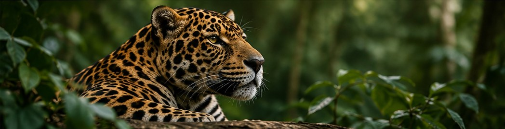
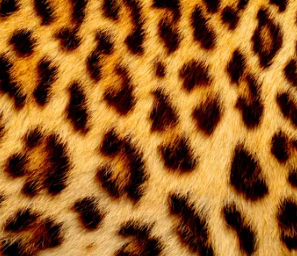
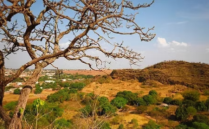
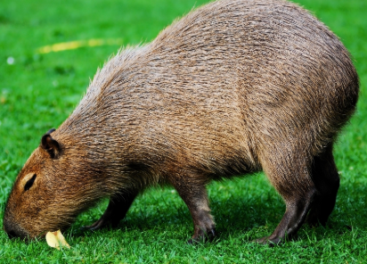

Missão
Contribuir para a proteção da fauna brasileira por meio de educação ambiental, mobilização e ações de conservação.
Faça seu cadastro e descubra como contribuir como voluntário.
O Instituto Aruana conecta pessoas e iniciativas em defesa dos animais silvestres e dos ecossistemas brasileiros.

O Instituto Aruana é uma organização dedicada à preservação da fauna e da natureza. Nosso propósito é incentivar a conscientização ambiental, apoiar a proteção de espécies ameaçadas e aproximar a sociedade das causas ambientais.
Contribuir para a proteção da fauna brasileira por meio de educação ambiental, mobilização e ações de conservação.
Construir um futuro em que pessoas e natureza convivam de maneira equilibrada e sustentável.
Respeito à vida, responsabilidade ambiental, transparência, solidariedade e compromisso coletivo.
Conscientização sobre espécies ameaçadas e a importância da preservação dos habitats naturais.
Incentivo à recuperação de áreas verdes e à conservação da biodiversidade.
Compartilhamento de conhecimento para estimular atitudes sustentáveis no dia a dia.

Monitoramento com armadilhas fotográficas e proteção de corredores ecológicos para o maior felino das Américas.

Reflorestamento de áreas degradadas com espécies nativas, devolvendo abrigo e alimento à fauna.

Atendimento, reabilitação e soltura de animais vítimas de tráfico, atropelamento e queimadas.
Juntos podemos ampliar a proteção da nossa fauna. Cadastre-se e descubra como contribuir.
Quero ser voluntário